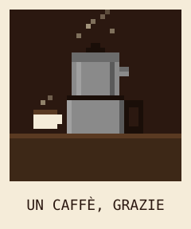
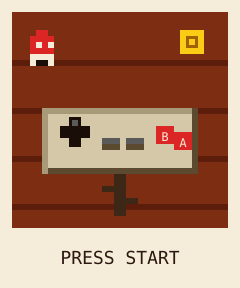
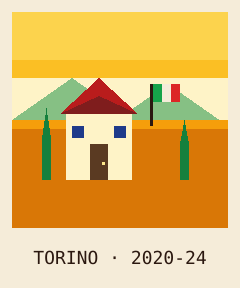
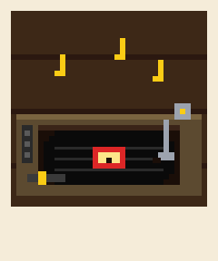
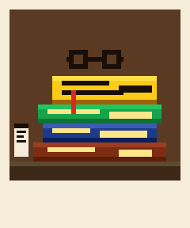
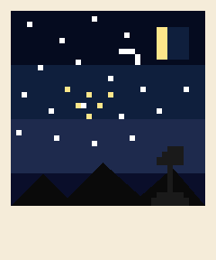

cartão de visita · ibtech 2026.1
JOSHUA AZZE DISTEL
Engenharia da Computação · Ibmec BH · IbTech & IbBot
entra no quarto01 mesa de estudos
Sou estudante de Engenharia da Computação no Ibmec BH desde 2025. Comecei a programar aos 14 anos e venho aprendendo o restante ao longo do caminho.
Boa parte do que aprendi sobre organizar projetos até o final veio do escotismo. Recebi o título de Escoteiro da Pátria em 2024. O ponto, no entanto, foi mais sobre conviver com pessoas diferentes e tocar iniciativas em grupo do que sobre o reconhecimento em si.
Hoje colaboro na IbTech e na IbBot, as ligas de software e robótica do Ibmec BH. O que sai bem raramente é trabalho de uma pessoa só, então atribuir conquistas a um único nome costuma ser injusto. Procuro fazer minha parte da forma mais correta possível.
Tenho gostado de colocar projetos no ar e acompanhar pessoas usando. Ando equilibrando o uso de IA no fluxo de trabalho (prompt engineering, vibe coding) com a tentativa de entender o que está acontecendo por baixo. Ainda erro bastante essa parte e estou aprendendo.
Cresci entre cinco línguas (português, italiano, inglês, espanhol e alemão) por causa do Liceo Scientifico da Fundação Torino, que segue currículo italiano.
- IA aplicada
- robótica
- backend python
- cloud (gcp)
- prompt engineering
- apis & integrações
- pwa
- aventura ao ar livre
02 mural






«L'imagination gouverne le monde.»
A imaginação governa o mundo.
«Audentes Fortuna iuvat.»
A fortuna favorece os audazes.
«L'amor che move il sole e l'altre stelle.»
O amor que move o sol e as outras estrelas.
03 prateleira
Cada livro corresponde a um marco. Em ordem de chegada. Clique para abrir.
& top of program
25.2
04 mesa de cabeceira
Onde fica o que importa: lugar pra me chamar.
dica: tem easter egg escondido. tenta a sequência ↑ ↑ ↓ ↓ ← → ← → b a no teclado.